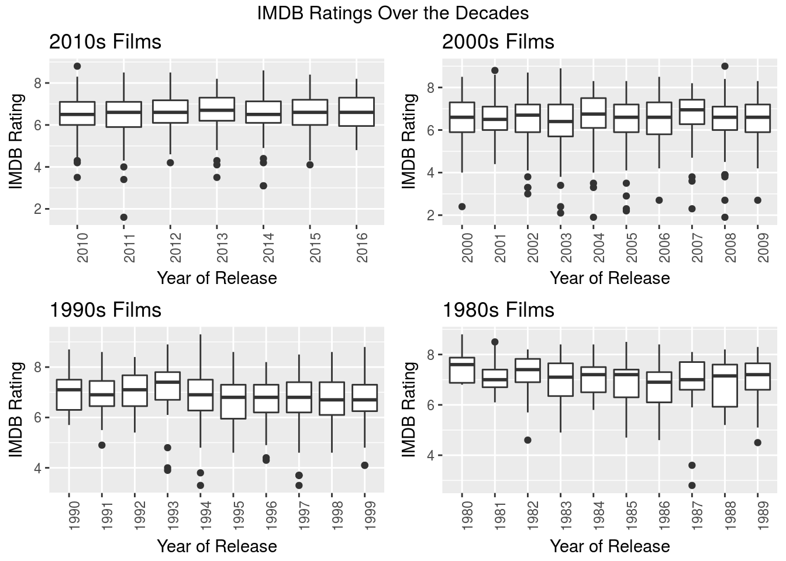

Visualizing IMDB ratings
This was a very simple visualization I did to test out some of the abilities of ggplot2, an R package with some more robust options that go beyond the base level visualization abilities of R.
We seek to visualize movies over the past few decades to see how quality (or perceived quality at least) has changed over time. There is no actual analysis done on this data, save for the kind of intuitive deduction that can be made from observing the visualizations. Having said that, I would be interested in delving more deeply into these data with the skills in data mining that I’ve gained since having done this.
This was a very simple visualization I did to test out some of the abilities of ggplot2, an R package with some more robust options that go beyond the base level visualization abilities of R.
We seek to visualize movies over the past few decades to see how quality (or perceived quality at least) has changed over time. There is no actual analysis done on this data, save for the kind of intuitive deduction that can be made from observing the visualizations. Having said that, I would be interested in delving more deeply into these data with the skills in data mining that I’ve gained since having done this.
Data was found on Kaggle.com and drawn from the Internet Movie Database.
1 Subsetting the data
Here we subset() the data in order to work with a data that makes sense for our purposes. I decided that it would be good to only look at films that were voted on by at least 20,000 people, to ensure that these ratings would be more accurate. For example, a universally praised (or panned) film that only has 1000 votes, probably because it was only seen by a very small minority, probably shouldn’t factor into our appraisal of the the quality of films of the decade in general.
# ggplot2, gridExtra, readr are loaded
# The dataset is loaded as 'movies'
movies <- read.csv("~/Documents/git-workspace/imdb-ratings/movie_metadata.csv",
stringsAsFactors = FALSE, na.strings = c(NA, "NA"), skipNul = TRUE,
fill = FALSE)
# This subsets the movies to only those which have been voted on by more than 20000 users
movies <- subset(movies, num_voted_users >= 20000)
# To remove any rows with missing values
movies <- movies[complete.cases(movies),]
# Reducing the data.frame to relevant variables
keeps <- c("imdb_score", "title_year", "movie_title", "director_name")
movies <- movies[keeps]2 The 10s
The data for the decade that began in 2010 only goes up until 2016, so naturally it is a smaller subset of data than the rest.
Let’s take a look at the best and worst films of the decade.
tens <- subset(movies, title_year >= 2010)
tens <- tens[order(tens$imdb_score, decreasing = TRUE),]
head(tens)## imdb_score title_year movie_title director_name
## 98 8.8 2010 Inception Christopher Nolan
## 97 8.6 2014 Interstellar Christopher Nolan
## 4 8.5 2012 The Dark Knight Rises Christopher Nolan
## 297 8.5 2012 Django Unchained Quentin Tarantino
## 3932 8.5 2011 Samsara Ron Fricke
## 4029 8.5 2014 Whiplash Damien ChazelleNote the fact that the three best films of this 6-year period (as voted by IMDB users) were all by Christopher Nolan. Also tied for third is my favorite director, Quentin Tarantino with Django Unchained.
tail(tens)## imdb_score title_year movie_title director_name
## 2204 3.5 2010 Vampires Suck Jason Friedberg
## 2211 3.5 2013 Scary Movie 5 Malcolm D. Lee
## 515 3.4 2011 Jack and Jill Dennis Dugan
## 2400 3.1 2014 Left Behind Vic Armstrong
## 2569 3.1 2014 Left Behind Vic Armstrong
## 2835 1.6 2011 Justin Bieber: Never Say Never Jon M. ChuOn the other side of things, the worst film of this period was apparently Justin Bieber’s concert film, Never Say Never. Two parody films topped the list.
tens_plot <- ggplot(tens, aes(x = factor(title_year), y = imdb_score)) + geom_boxplot()
tens_plot <- tens_plot + theme(legend.position = "none") + theme(axis.text.x = element_text(angle = 90, hjust = 1)) + scale_y_continuous(breaks = seq(0,10,2))
tens_plot <- tens_plot + labs(title = "2010s Films", x = "Year of Release", y = "IMDB Rating")
tens_plot
Modern films seem to be pretty mediocre across the board (between 6-7), but if nothing else, each year seems to be consistent with the last. The sole high outlier of this decade was the 2010 film Inception, directed by Christopher Nolan.
3 The 00s
zeroes <- subset(movies, title_year >= 2000 & title_year < 2010)
zeroes <- zeroes[order(zeroes$imdb_score, decreasing = TRUE),]
head(zeroes)## imdb_score title_year
## 67 9.0 2008
## 340 8.9 2003
## 271 8.8 2001
## 341 8.7 2002
## 4030 8.7 2002
## 2374 8.6 2001
## movie_title director_name
## 67 The Dark Knight Christopher Nolan
## 340 The Lord of the Rings: The Return of the King Peter Jackson
## 271 The Lord of the Rings: The Fellowship of the Ring Peter Jackson
## 341 The Lord of the Rings: The Two Towers Peter Jackson
## 4030 City of God Fernando Meirelles
## 2374 Spirited Away Hayao MiyazakiAll three of Peter Jackson’s The Lord of the Rings trilogy cracked the top 6, along with another Nolan Batman film. Two foreign films made the top of this list, the Brazilian film City of God (aka Cidade de Deus) and a personal favorite, along with the animated Miyazaki classic, Spirited Away.
tail(zeroes)## imdb_score title_year movie_title director_name
## 2193 2.3 2007 Epic Movie Jason Friedberg
## 2314 2.3 2005 Alone in the Dark Uwe Boll
## 320 2.2 2005 Son of the Mask Lawrence Guterman
## 2984 2.1 2003 From Justin to Kelly Robert Iscove
## 2269 1.9 2008 Disaster Movie Jason Friedberg
## 2296 1.9 2004 Superbabies: Baby Geniuses 2 Bob ClarkNotably, two of the worst films of this decade were by Jason Friedberg, namely the parody films Epic Movie and Disaster Movie. He is also responsible for Vampires Suck, one of the worst rated films of the 2010s.
zeroes_plot <- ggplot(zeroes, aes(x = factor(title_year), y = imdb_score)) + geom_boxplot()
zeroes_plot <- zeroes_plot + theme(legend.position = "none") + theme(axis.text.x = element_text(angle = 90, hjust = 1)) + scale_y_continuous(breaks = seq(0,10,2))
zeroes_plot <- zeroes_plot + labs(title = "2000s Films", x = "Year of Release", y = "IMDB Rating")
zeroes_plot
4 The 90s
nineties <- subset(movies, title_year >= 1990 & title_year < 2000)
nineties <- nineties[order(nineties$imdb_score, decreasing = TRUE),]
head(nineties)## imdb_score title_year movie_title director_name
## 1938 9.3 1994 The Shawshank Redemption Frank Darabont
## 1875 8.9 1993 Schindler's List Steven Spielberg
## 3356 8.9 1994 Pulp Fiction Quentin Tarantino
## 684 8.8 1999 Fight Club David Fincher
## 837 8.8 1994 Forrest Gump Robert Zemeckis
## 655 8.7 1999 The Matrix Lana WachowskiThree of my favorite films came out in the 1990s and topped this list: Pulp Fiction, Fight Club, and The Matrix. The decade’s top film, The Shawshank Redemption, actually was a box office disappointment because of its direct competition with Tarantino’s film.
tail(nineties)## imdb_score title_year movie_title
## 1448 3.8 1994 Street Fighter
## 218 3.7 1997 Batman & Robin
## 268 3.7 1997 Speed 2: Cruise Control
## 1661 3.7 1997 Mortal Kombat: Annihilation
## 1935 3.3 1997 Spice World
## 3231 3.3 1994 Police Academy: Mission to Moscow
## director_name
## 1448 Steven E. de Souza
## 218 Joel Schumacher
## 268 Jan de Bont
## 1661 John R. Leonetti
## 1935 Bob Spiers
## 3231 Alan MetterTwo films based on fighting video games (my personal favorite genre) landed in the bottom spots: Street Fighter, notably starring Jean Claude van Damme and Kylie Minogue, and Mortal Kombat: Annihilation. Also included was the only Batman film starring George Clooney, replacing Val Kilmer. It would be the last Batman film until Nolan’s reboot in 2005 (the third of his Batman trilogy of course topping the charts in the 2010s). Arnold Schwarzeneggar was Mr. Freeze in this film, possibly the ‘punniest’ villain of all time.
nineties_plot <- ggplot(nineties, aes(x = factor(title_year), y = imdb_score)) + geom_boxplot()
nineties_plot <- nineties_plot + theme(legend.position = "none") + theme(axis.text.x = element_text(angle = 90, hjust = 1)) + scale_y_continuous(breaks = seq(0,10,2))
nineties_plot <- nineties_plot + labs(title = "1990s Films", x = "Year of Release", y = "IMDB Rating")
nineties_plot
5 The 80s
eighties <- subset(movies, title_year >= 1980 & title_year < 1990)
eighties <- eighties[order(eighties$imdb_score, decreasing = TRUE),]
head(eighties)## imdb_score title_year movie_title
## 2052 8.8 1980 Star Wars: Episode V - The Empire Strikes Back
## 2153 8.5 1981 Raiders of the Lost Ark
## 2364 8.5 1985 Back to the Future
## 1537 8.4 1983 Star Wars: Episode VI - Return of the Jedi
## 1715 8.4 1984 Once Upon a Time in America
## 2487 8.4 1986 Aliens
## director_name
## 2052 Irvin Kershner
## 2153 Steven Spielberg
## 2364 Robert Zemeckis
## 1537 Richard Marquand
## 1715 Sergio Leone
## 2487 James CameronRobert Zemeckis, who made the last list in the 90s for Forrest Gump, also topped this decade with one of my favorites, Back to the Future. The two latter films in the original Star Wars trilogy, Episodes V and VI, also topped the list.
tail(eighties)## imdb_score title_year
## 4230 4.7 1985
## 1694 4.6 1986
## 4185 4.6 1982
## 3737 4.5 1989
## 2519 3.6 1987
## 2067 2.8 1987
## movie_title director_name
## 4230 Friday the 13th: A New Beginning Danny Steinmann
## 1694 Howard the Duck Willard Huyck
## 4185 Halloween III: Season of the Witch Tommy Lee Wallace
## 3737 Friday the 13th Part VIII: Jason Takes Manhattan Rob Hedden
## 2519 Superman IV: The Quest for Peace Sidney J. Furie
## 2067 Jaws: The Revenge Joseph SargentSpeaking of sequels however, the worst films of the 80s were several ill-advised sequels to well-known classics, many of which were done without the involvement of original directors or cast members. Of the films here, only Howard the Duck is not a sequel. Notably also is the inclusion of the 5th and 8th Friday the 13th films. Halloween III is the also only film in the series that doesn’t not feature the antagonist Michael Myers.
Jaws: The Revenge was the fourth and final sequel to the series, with only the original film involving Steven Spielberg, who of course directed the 2nd best rated film of this decade, Raiders of the Lost Ark as well as Schindler’s List in the 90s.
eighties_plot <- ggplot(eighties, aes(x = factor(title_year), y = imdb_score)) + geom_boxplot()
eighties_plot <- eighties_plot + theme(legend.position = "none") + theme(axis.text.x = element_text(angle = 90, hjust = 1)) + scale_y_continuous(breaks = seq(0,10,2))
eighties_plot <- eighties_plot + labs(title = "1980s Films", x = "Year of Release", y = "IMDB Rating")
eighties_plot
6 Conclusions
Now let’s take a look at all four plots in unison and see if we can’t conjure any ideas.
grid.arrange(tens_plot, zeroes_plot, nineties_plot, eighties_plot, nrow=2, ncol=2, top = "IMDB Ratings Over the Decades")
From the looks of it, the 1980s was overall perhaps the best decade for films. For most of the decade, films on average rated around ~7 or ~8, with few if any lower outliers. Conversely, the 2000s have a number of uncharacteristically bad films which drag down the averages per year quite a bit. One wonders how the 2000s would be seen in terms of film history without these.
Several directors came out strong not only in individual decades, but across them. Christopher Nolan had as many as 4 between 2000 and 2016, with 3 in one decade, and 2 from his Dark Knight Trilogy. Robert Zemeckis and Stephen Spielberg each had one film per decade, and Peter Jackson’s Lord of the Rings Trilogy took three of the top spots in the decade it was released.
On the other hand, Jason Friedberg was possibly the most panned director by audiences, given that he released two of the worst films of the 2000s as well as one in the 2010s as voted by IMDB users.
Several of the worst films were sequels to well-known and successful films including horror franchises like Friday the 13th, Halloween, comedy films like The Mask, or the classic that is Jaws. Also important to note is that several parody films, including those by Jason Friedberg and the Scary Movie franchise, appeared in the worst film lists.
Data found on Kaggle.com and drawn from the Internet Movie Database